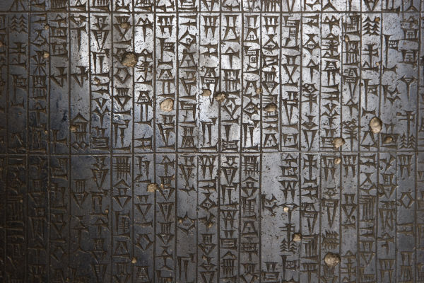
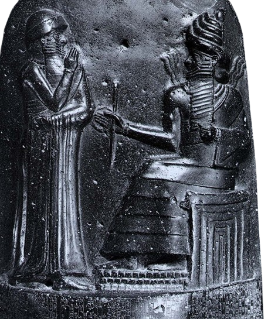

O Código de Hamurábi, de maneira genérica, é entendido como um código de leis que resumia uma série de determinações legais que eram tradicionais na Mesopotâmia. Foi elaborado durante o reinado de Hamurábi, rei babilônico no século XVIII a.C. Possuía um total de 282 artigos, que se baseavam no princípio da Lei do Talião.

O Código de Hamurábi era um compêndio de leis que foi criado na Mesopotâmia, mais especificamente durante o reinado de Hamurábi, rei do Primeiro Império da Babilônia, no século XVIII a.C. É vulgarmente conhecido como um código penal, embora os historiadores tenham resistência de defini-lo dessa maneira por não se tratar de um código penal no sentido moderno da palavra.

Esse código é entendido como uma espécie de resumo de uma série de tradições legais que existiam historicamente na Mesopotâmia. Basicamente, o Código de Hamurábi estabelecia formas de conduta para determinadas situações e punições para certos delitos. O nome do código faz menção direta a quem supostamente o elaborou ou ao rei do período em que ele foi elaborado.
Hamurábi foi rei da Babilônia de 1792 a.C. a 1750 a.C. e o responsável por formar o Primeiro Império da Babilônia. No próprio código, Hamurábi afirmava que essas leis visavam garantir o que era mais justo para as pessoas, caso elas entrassem em disputa umas com as outras. Hamurábi ainda definia a si próprio como rei da justiça e como um pai para os seus súditos|1|.
O Código de Hamurábi não foi o primeiro compêndio de leis criado na Mesopotâmia, uma vez que os historiadores sabem da existência do Código de Ur-Namu, criado por volta do século XX a.C. Esse código era de origem suméria e tinha punições muito mais leves que as que estão presentes no Código de Hamurábi.
O Código de Ur-Namu apresentava penas capitais para alguns delitos, como roubo e assassinato, por exemplo, e determinada multas em prata para a maioria dos outros delitos. Já o Código de Hamurábi, como veremos, baseava-se na Lei de Talião e oferecia punições proporcionais ao delito cometido.
Quando falamos do Código de Hamurábi, é importante entendermos que, apesar das duras punições estabelecidas por esse código, ele é entendido pelos historiadores como um grande avanço, pois foi desenvolvido em um contexto em que a Mesopotâmia formava reinos e cidades cada vez mais multiétnicas.
Do ponto de vista do Primeiro Império Babilônico, o Código de Hamurábi foi importante porque se colocava como uma referência para mediação de conflitos. O historiador Paul Kriwaczek apresenta o fato de que desentendimentos em sociedades multiétnicas, como a Babilônia, poderiam se transformar rapidamente em conflitos violentos.
Sendo assim, o Código de Hamurábi era uma ferramenta essencial para garantir a estabilidade do império, pois estabelecia punições para determinadas condutas, controlando assim a sede de vingança de muitos e evitando o desenvolvimento de conflitos que poderiam prejudicar a ordem do império babilônico.
O Código de Hamurábi foi escrito originalmente em língua acadiana e foi registrado em uma estela de diorito negro por meio da escrita cuneiforme, a escrita que foi criada pelos sumérios. Esse registro mesopotâmico foi resgatado em escavações realizadas onde ficava a cidade de Elam, atual Irã. Acredita-se que a estela, que tinha mais de 2 metros de altura, foi para Elam como butim de guerra.
Quando falamos do Código de Hamurábi, é importante entendermos que, apesar das duras punições estabelecidas por esse código, ele é entendido pelos historiadores como um grande avanço, pois foi desenvolvido em um contexto em que a Mesopotâmia formava reinos e cidades cada vez mais multiétnicas.
Do ponto de vista do Primeiro Império Babilônico, o Código de Hamurábi foi importante porque se colocava como uma referência para mediação de conflitos. O historiador Paul Kriwaczek apresenta o fato de que desentendimentos em sociedades multiétnicas, como a Babilônia, poderiam se transformar rapidamente em conflitos violentos|2|.
Sendo assim, o Código de Hamurábi era uma ferramenta essencial para garantir a estabilidade do império, pois estabelecia punições para determinadas condutas, controlando assim a sede de vingança de muitos e evitando o desenvolvimento de conflitos que poderiam prejudicar a ordem do império babilônico.
O Código de Hamurábi foi escrito originalmente em língua acadiana e foi registrado em uma estela de diorito negro por meio da escrita cuneiforme, a escrita que foi criada pelos sumérios. Esse registro mesopotâmico foi resgatado em escavações realizadas onde ficava a cidade de Elam, atual Irã. Acredita-se que a estela, que tinha mais de 2 metros de altura, foi para Elam como butim de guerra.
Como mencionado, o Código de Hamurábi baseava-se na Lei de Talião, um princípio que tinha como ideia central uma punição proporcional ao dano/delito cometido. O lema da Lei de Talião era o “olho por olho, dente por dente”, um lema sugestivo que já nos dá a ideia do que ele propõe.
Ao todo, o Código de Hamurábi possui 282 leis, que tratavam de diferentes questões e abordavam assuntos relativos à família, ao trabalho, ao preço das mercadorias, etc. A questão mais discutida pelo código, segundo Paul Kriwaczek, eram assuntos de família, como “noivado, casamento e divórcio, adultério e incesto, filhos, adoção e herança”.
Por meio dos registros do Código de Hamurábi, sabemos hoje que existiam três classes sociais na Babilônia. Essas classes sociais eram três:
Como mencionado, o Código de Hamurábi possui 282 artigos. Vamos ver alguns exemplos de abordagem do código para assuntos diferentes.